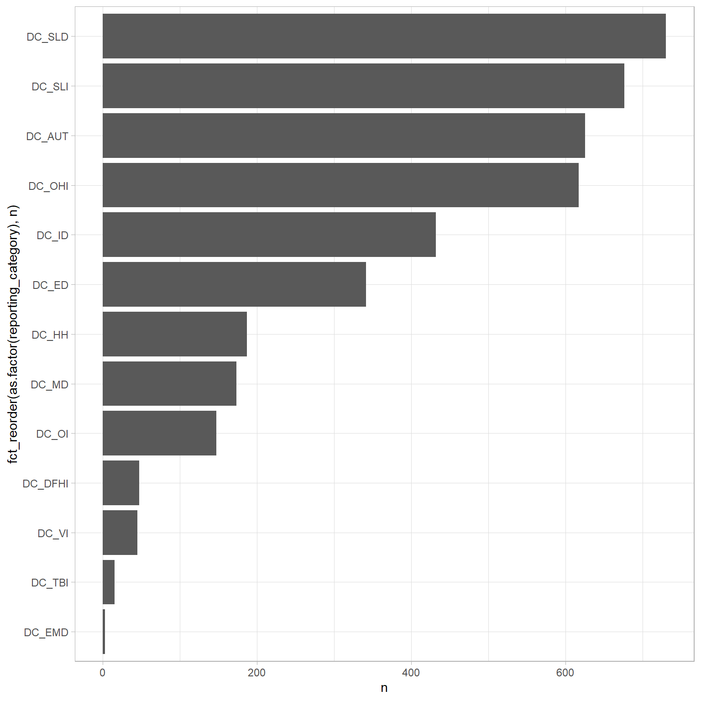

Data was then loaded from the txt files and saved as csv files in case files were changed from the California Department of Education. You can find the data files as csv files here.
DC_SLD = Specific Learning Disability (SLD) Reference Group
DC_SLI = Speech or Language Impairment (SLI)
DC_TBI = Traumatic Brain Injury (TBI)
DC_VI = Visual Impairment (VI)
ps_rcgt80_percent
A program setting where a student with disabilities participates in regular general education classroom setting, which includes at least 50 percent nondisabled students, at least 80 percent of the school day. On the report, data in these columns represent the number/percentage of the Special Education Enrollment for students whose Special Education Program Setting is Regular Classroom/Public Day School or Regular Independent Study or Virtual Charter and whose General Education Classroom Setting is Regular Class 80 Percent or More of the Day.
Code
data |>count( reporting_category ) |>ggplot(aes(fct_reorder(as.factor(reporting_category), n ), n ) ) +geom_col(position ="dodge" ) +coord_flip()

Code
data |>count( reporting_category ) |>arrange(desc(n)) |>reactable()
students with disabilities that were in regular classes 80% of the time did not have much of a difference in suspension counts
students that were deaf or had hearing impairments that were in regular classes 80% of the time had greater log odds of being suspended for defiance in comparison to students with specific learning disabilities (2.39, 95% Credible Intervals: 1.32, 3.43)
students that had emotional disturbance disabilities that were in regular classes 80% of the time had lower log odds of being suspended for defiance in comparison to students with specific learning disabilities (.35, 95% Credible Intervals: .24, .46)
students that were hard of hearing that were in regular classes 80% of the time had lower log odds of being suspended for defiance in comparison to students with specific learning disabilities (.16, 95% Credible Intervals: .07, .25)
students with intellectual disabilities that were in regular classes 80% of the time had lower log odds of being suspended for defiance in comparison to students with specific learning disabilities (.69, 95% Credible Intervals: .46, .92)
students with multiple disabilities that were in regular classes 80% of the time had greater log odds of being suspended for defiance in comparison to students with specific learning disabilities (1.51, 95% Credible Intervals: .28, 2.73) MAYBE
students with orthopedic health impairments that were in regular classes 80% of the time had lower log odds of being suspended for defiance in comparison to students with specific learning disabilities (.40, 95% Credible Intervals: .19, .60)
Random Findings without Covariates
It seems that Sacramento is providing more suspensions to students in special education classes more than any other California county.
The bordering counties of Sacramento, Stanislaus, San Joaquin, and Solano counties all have the highest
Findings with Covariates
Sacramento and Stanislaus counties are suspending more students in special education classes more than any other California county. This is even when considering the cumulative enrollment in the counties and the total number of suspensions.
When considering unduplicated number of suspensions, Sacramento still had the highest number of suspensions for defiance only; however the difference with other counties was not as drastic. Further examination is needed into why Sacramento is suspending students in special education courses.